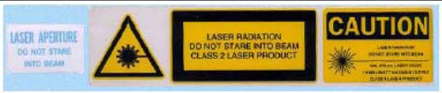

Operating Documentation
Direction 5193574-800, Rev# 22
LightSpeed 7.X Service Methods
Module Version 2.0, Version Date 4/28/10
Operating Documentation |
All labels are installed in English and present on PDU, Console, Table, Gantry and Accessories. Add the labels listed below (Table 1 and Section 2) for the appropriate language for the country in which this system is installed. Additionally, apply any other warning labels if present, on equipment where appropriate.
| ||||
| Important: Do not cover English labels already on the system. | ||||
Table 1: System Warning Labels
| Subsystem | Component | Label(s) |
| Console | SCIM | Language overlay label X-ray warning label |
| Keyboard | Function key overlay label Keyboard ERGO Warning (GOC6 Series Only) | |
| Gantry | Scan Window | Laser warning label |
| Laser Window | Laser warning label | |
| Front Cover | Laser warning label Information labels | |
| System GIB | System Global Installation Base (rating) label | |
| Table (1700) | Front Side Cover | Pinch Hazard warning label - each side of cover |
| Rear Side Cover | Pinch Hazard warning label - each side of cover | |
| Back Cradle Pan | Pinch Hazard warning label - each side of cover | |
| Table (2000) | Front Side Cover | Pinch hazard warning label - each side of cover |
| Back Cradle Pan | Pinch hazard warning label - each side of cover | |
| NGPDU | Front Cover | Emergency OFF label Gantry Enable label Power ON label |
| Accessories | Table Foot Extender | Warning label |
| Coronal Head Holder | Warning label | |
| Sagittal Head Holder | Warning label | |
| Accessory Tray | Warning label | |
| IV Pole | Caution label |
When finished update GE Form e4879 and the installation completion form that all appropriate language labels were installed and present.
The labels on the system and the system manuals must comply with the country law, as listed in Direction 5221102-1EN (found in the language collector kit shipped with the system) regardless of the user interface (UI) language that is chosen. Compliance to the law must be completed prior to releasing the system to the customer.
Make sure the X-Ray warning label appears in the correct location on the SCIM.
Record this information on GE Form e4879 located on the Service CD.
Check that all laser warning labels are present on the gantry near the laser opening.
There should also be warning labels on the lower right side of the gantry front cover.
Record this information on GE Form e4879 located on the Service CD.
Make sure all laser warning labels appear in the correct location on the outside of the gantry.
Obtain and install replacements for any missing labels
Illustration 1: Laser Warnings and Precautions

Collect the product locator cards shipped with the system. There should be approximately 28 product locator cards with the average system.
Update the online product locator web site with the required hospital information.
Confirm that the serial numbers on the cards shipped with the system match those found on the web site for that GON number. Update the information, as required.
Place the cards in a plastic bag, then place them in the service cabinet.
Perform several scans following the steps below. Verify that the x-ray ON lights are ON during the scans. When done, complete the information on GE form e4869 on the Service CD.
Make sure the axial drive enable and HVDC enable switches are ON.
If you are not on the Service Desktop, click on the Service Desktop icon.
Select [DIAGNOSTICS].
Select [DIAGNOSTIC DATA COLLECTION].
Set the scan time to 2.00.
Set the kV to 80.
Set the mA to 40.
Press [ACCEPT RX].
Press [START SCAN] button when flashing.
Record the above information on GE Form e4879 located on the Service CD.